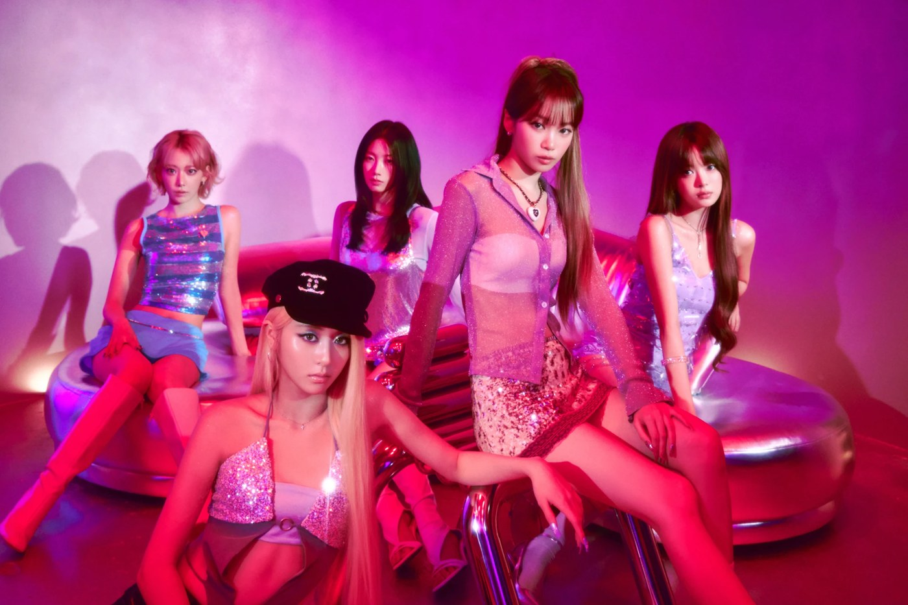
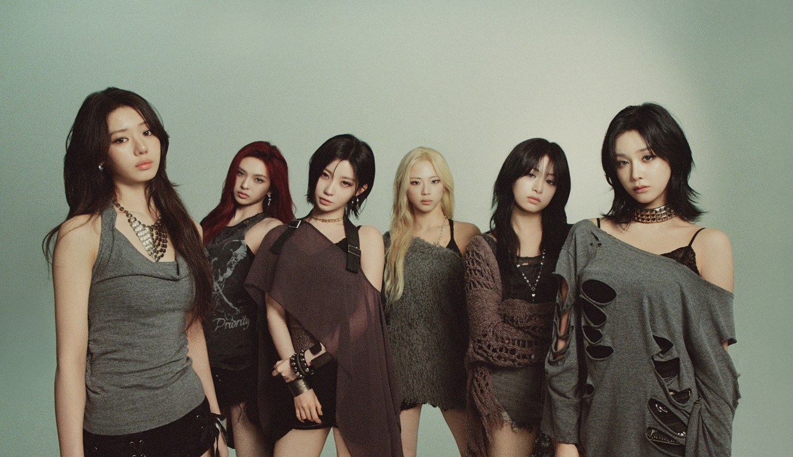

J-POP / UNA SEZIONE EXTRAOltre il
Oltre il
Giappone.
La curiosità non ha una sola lingua. Una parte della casa musicale di Yume dedicata al K-pop e al pop internazionale, con la stessa voglia di scoprire storie, persone e dischi.

COREA DEL SUD · K-POP / DANCE POP
LE SSERAFIM
FEARLESS, ANTIFRAGILE e UNFORGIVEN: cinque personalità fra K-pop, dance e performance.
Scopri la storia e i dischi ↗
COREA DEL SUD · K-POP / HIP-HOP / POP
BABYMONSTER
Da SHEESH a DRIP e CHOOM: voci, rap e performance nell’universo di YG Entertainment.
Scopri la storia e i dischi ↗STATI UNITI · POP / POP ROCK
Olivia Rodrigo
Da drivers license a SOUR e GUTS: ballate, pop rock e tre album originali da esplorare.
Scopri la storia e i dischi ↗